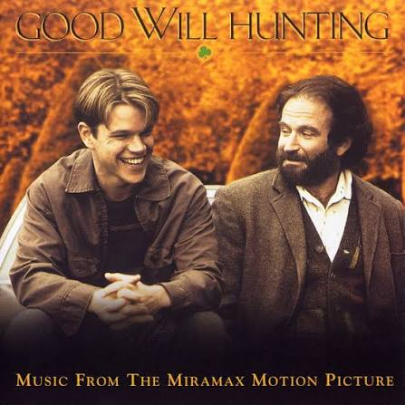

Sobre o Filme
Good Will Hunting é um drama que acompanha a história de Will Hunting, um jovem génio da matemática que trabalha como empregado de limpeza no MIT.
Com a ajuda de um terapeuta, Will tenta encontrar a sua verdadeira direção na vida e superar os traumas do seu passado.
Principais Aspetos do Filme
- Guião brilhante escrito por Matt Damon e Ben Affleck.
- Atuações excepcionais de Robin Williams e Matt Damon.
- Mensagem profunda sobre amizade, superação e genialidade.
Hiperligação e Imagem
Consulta mais detalhes sobre o filme na página do IMDb.
